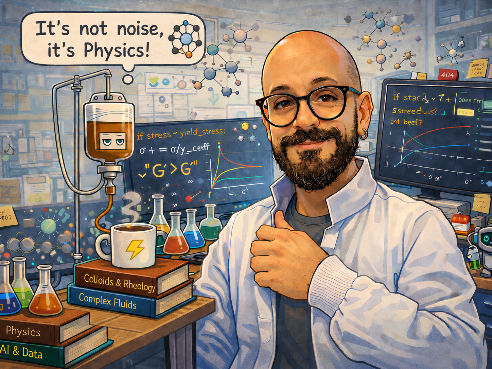

Ciao!
My name is Andrea de Marco and currently I am a PhD student at the Laboratory of Physics of Surfaces and Interfaces (LaFSI) at University of Padova - Italy.
My research interest focuses on the properties of Soft Materials such as colloids, emulsions and polymeric solutions both at rest and in flow conditions.